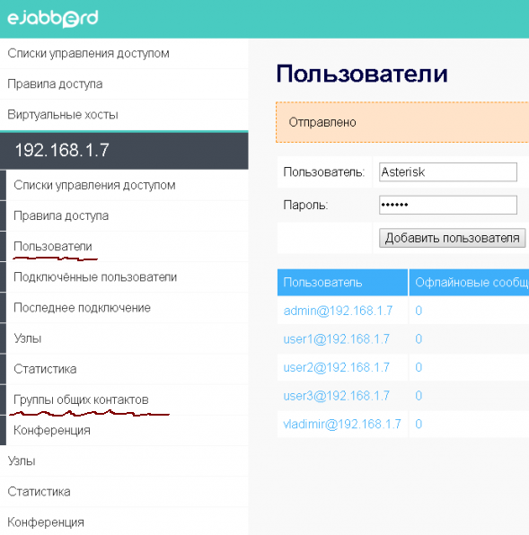

Web-интерфейс сервиса ejabbed весьма заковырист и неоднозначен. Если удалось в него залогиниться, то радоваться раньше времени не стоит: надо еще разобраться что и как в этом интерфейсе надо настраивать.
Первая задача после подняния jabber-сервера - это создать Jabber-пользователей и сделать так, чтобы они друг друга видели. Когда поднимают Jabber-сервер внутри небольшой компании, то предполагают, что пользователи будут по-умолчанию видеть друг друга. Но не таков ejabberd! Если не знать как это сделать, то в лучшем случае пользователи смогут присоедениться к jabber-серверу своими клиентскими программами, но смогут общаться сами с собой, и не видя при этом других пользователей.
Итак, вначале надо открыть раздел Виртуальные хосты. Скорее всего в нем будет несколько записей типа:
127.0.0.1
192.168.1.250
localhost
our.server.lo
Где 192.168.1.250 и our.server.lo - это IP-адрес и доменное имя текущего сервера внутри сети предприятия. Лучше работать с доменным именем. Надо на него нажать, и откроется интерфейс администрирования jabber-сервера с данным доменным именем.
Далее необходимо выбрать раздел Пользователи, и добавить несколько пользователей. Как только пользователь будет добавлен, он сможет зайти на Jabber-сервер через свой Jabber-клиент. Однако, пользователь не будет видеть соседних пользователей. Что делать?

Проблема в том, что не настроены так называемые Группы общих контактов. Именно такой пункт меню есть в настройках. Зайдя в него, надо добавить группу с именем Default. В параметрах группы необходимо указать следующие данные:
Название: Общая группа
Описание: Default-группа на сервере our.server.lo
Члены: @all@
Видимые группы: Default
Специальное имя @all@ подставляет всех существующих пользователей в члены данной группы.
Если заморочиться, то можно создать несколько групп, чтобы пользователи могли общаться только внутри данных групп. Для этого в поле Члены необходимо (через пробел?) прописывать логины тех пользователей, которые должны входить в данную группу.
После сохранения настройки Групп общих контактов пользователи должны переподключиться к jabber-серверу и они увидят других пользователей в интерфейсе своих jabber-клиентов.